Routeburn Track
Across the Southern Alps between Fiordland and Mount Aspiring, lake and saddle to The Divide.
Routeburn Track runs 32 km through New Zealand and finishes at The Divide. The first landmark is Routeburn Shelter. At 5,000 steps a day it's about a week of the walking you do anyway. All 11 landmarks are below, in walking order, with a photograph and the story of the place.
- 32km end to end
- 11landmarks
- a weekat 5,000 steps a day
- The Dividefinishes at

The landmarks of Routeburn Track
11 landmarks, in walking order. Each photograph is by the person credited beneath it, used as they licensed it.
-
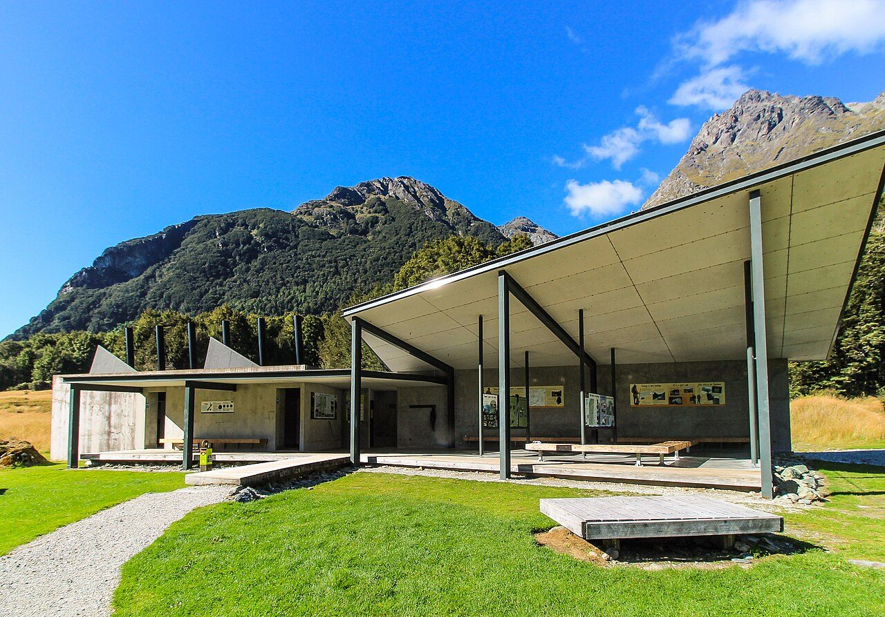
Photo: André Richard Chalmers - Routeburn, CC BY-SA 4.0 Routeburn Shelter
The Route Burn slides clear and cold beneath the road-end bridge, and beyond it the beech forest closes over the track. Here the Routeburn begins, one of New Zealand's Great Walks, thirty-two kilometres across the spine of the Southern Alps between Mount Aspiring and Fiordland national parks. Kea call from the canopy. The Humboldt Mountains rise ahead.
-
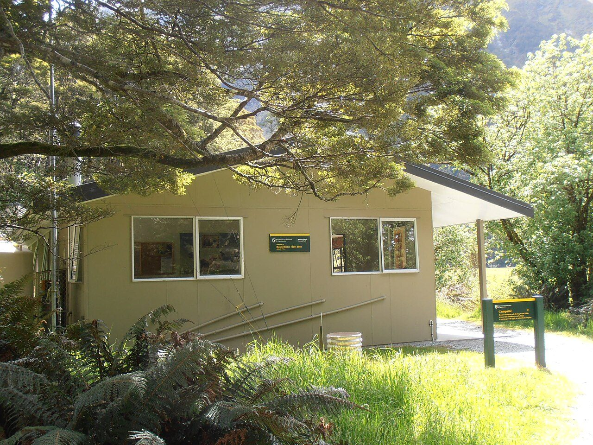
Photo: Sarang - Routeburn, Public domain Routeburn Flats Hut
The forest opens onto the Routeburn Flats, a wide meadow of tussock where the river braids across gravel and the peaks stand mirrored in still side-pools. The hut sits at the bush edge, looking back down the valley. Red deer graze the flats at dusk. Above, the track climbs toward the falls and the treeline.
-
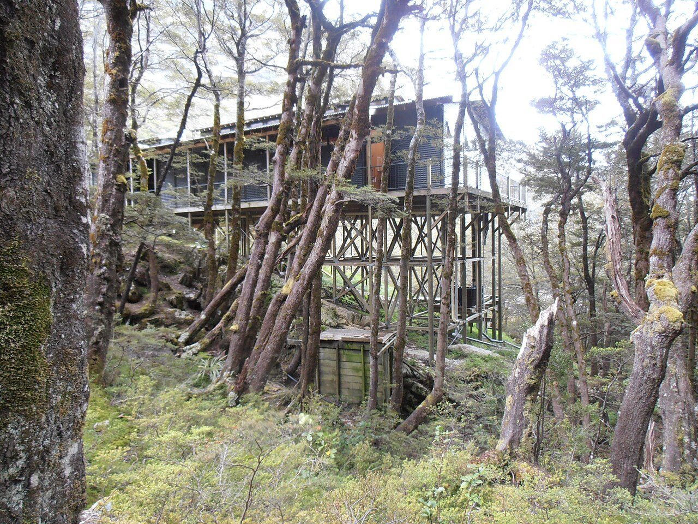
Photo: Sarang - Routeburn, Public domain Routeburn Falls Hut
Water thunders down tiered rock beside the hut, the Routeburn Falls dropping through a staircase of granite slabs. The hut's deck hangs at the very top of the forest, the last shelter before the alpine. Cloud often fills the valley below at dawn. From here the track leaves the trees for the open tops and the climb to Harris Saddle.
-
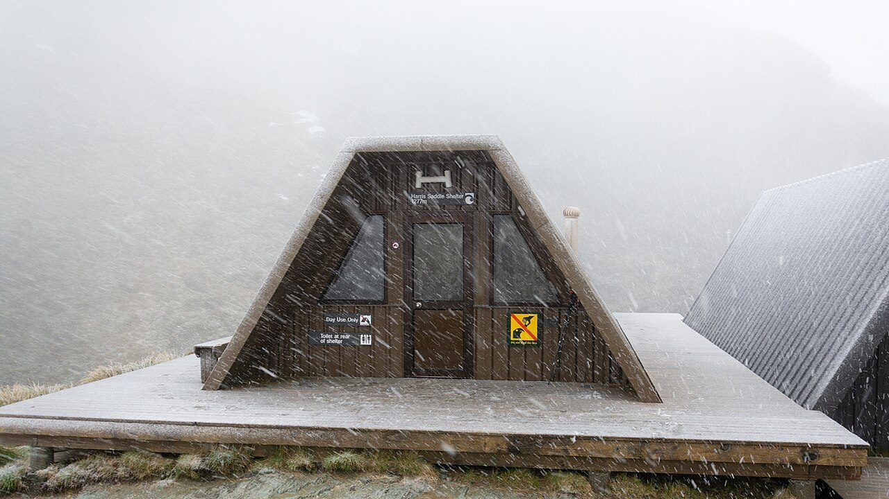
Photo: Christoph Strässler from Oberdorf BL, Schweiz - Harris, CC BY-SA 2.0 Harris Saddle
At 1,255 metres the track tops out on Harris Saddle, the high crossing between two great valleys. A day shelter stands against the wind. The side climb to Conical Hill lifts the view further, out over the Hollyford valley toward the Tasman Sea when the weather allows. Alpine daisies and snow tussock cover the ground.
-
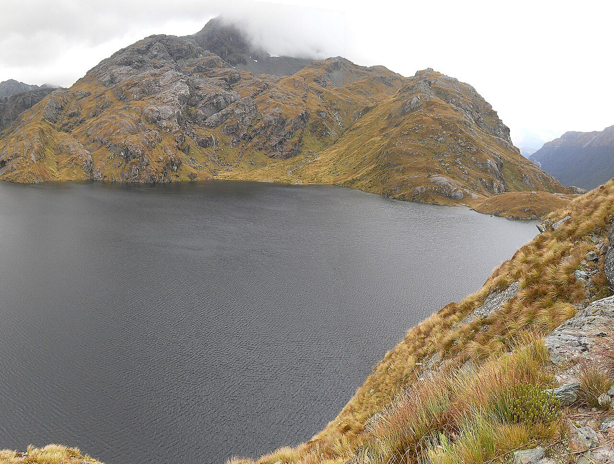
Photo: Andre Chalmers - Lake, CC BY-SA 3.0 Lake Harris
Just below the saddle lies Lake Harris, a long tarn cupped in bare rock, its water the deep blue-green of glacial melt. The track skirts high above the shore on a ledge cut into the mountainside. Snow lingers in the gullies here into summer. Keas patrol the rocks, bold and curious, quick to investigate an unguarded pack.
-
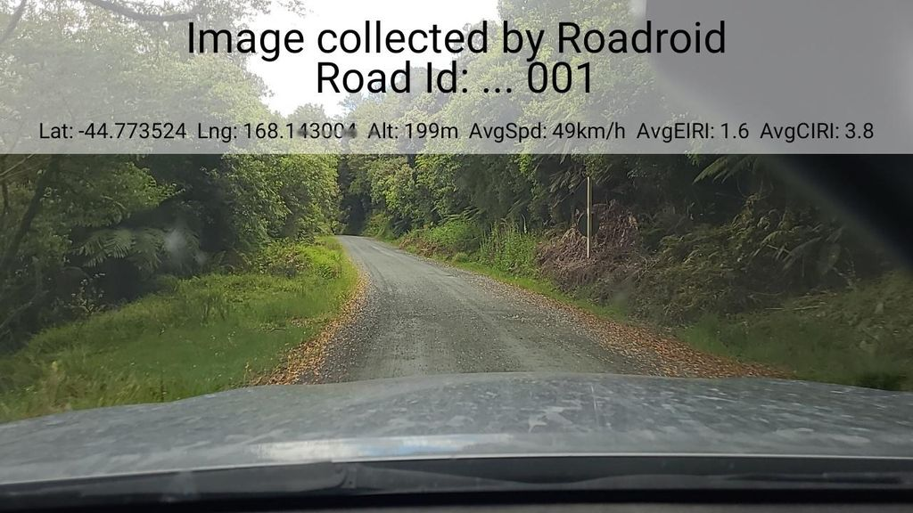
Photo: roadroid · Mapillary, CC BY-SA 4.0 Ocean Peak Corner
The track rounds a shoulder of the range at Ocean Peak Corner, and the whole Hollyford valley opens below — the river threading north to the sea, the Darran Mountains walling the horizon in ice and rock. On a clear day the Tasman Sea glints at the valley mouth. The path runs level here along the Hollyford Face, high above the trees.
-
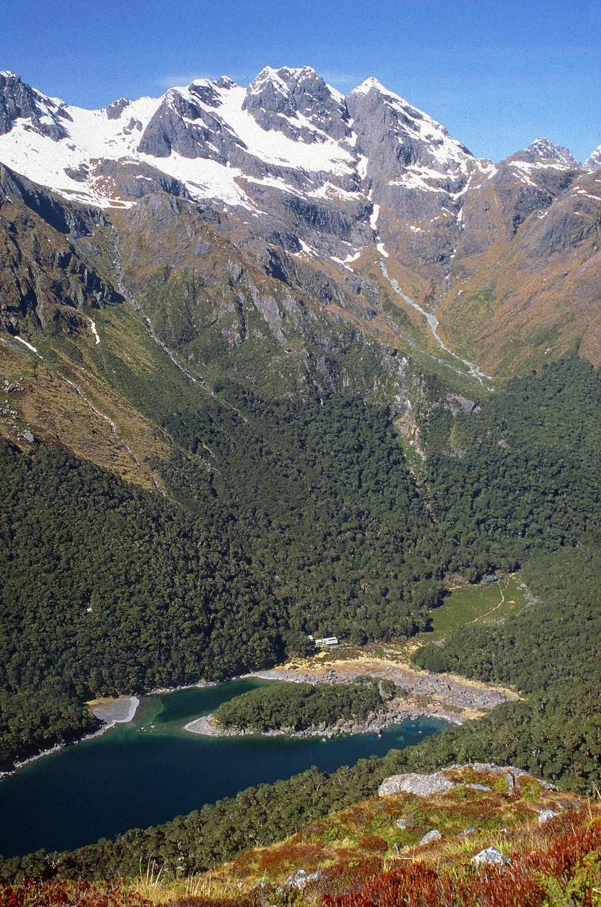
Photo: Steffen Sledz - Lake, CC BY-SA 3.0 Lake Mackenzie Hut
The track drops off the tops in switchbacks to Lake Mackenzie, a dark lake ringed by beech forest and cliffs, the hut set on a grassy flat at its edge. Ribbonwood and fuchsia grow along the shore. Morning mist lifts slowly off the water. The valley walls rise steep on every side, holding the lake in shadow well past dawn.
-
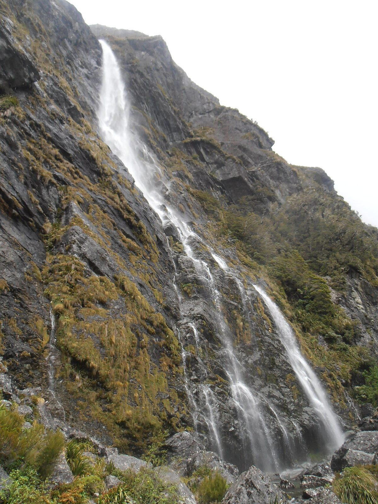
Photo: Sarang - Earland, Public domain Earland Falls
The track passes beneath Earland Falls, a 174-metre ribbon that drops sheer from the hanging valley above and drenches anyone crossing at its foot in heavy rain. Spray hangs in the beech forest. In flood the crossing can close entirely. Mosses and ferns crowd the wet rock, vivid green, fed year-round by the falling water.
-
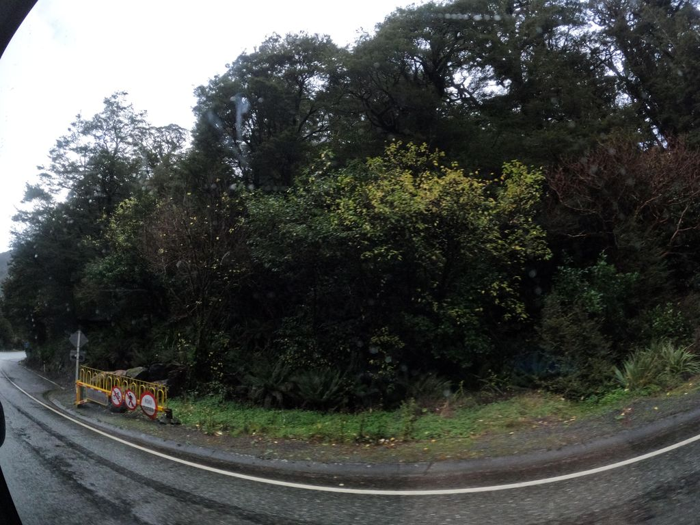
Photo: skillsy · Mapillary, CC BY-SA 4.0 Lake Howden Hut
Lake Howden sits at a junction of valleys, its hut among tall beech at the water's edge. From here the track to Key Summit branches off, and the Greenstone track heads south into its own long valley. The lake is still and tea-dark. This is the last shelter on the Routeburn, one short climb and one long descent from the road.
-
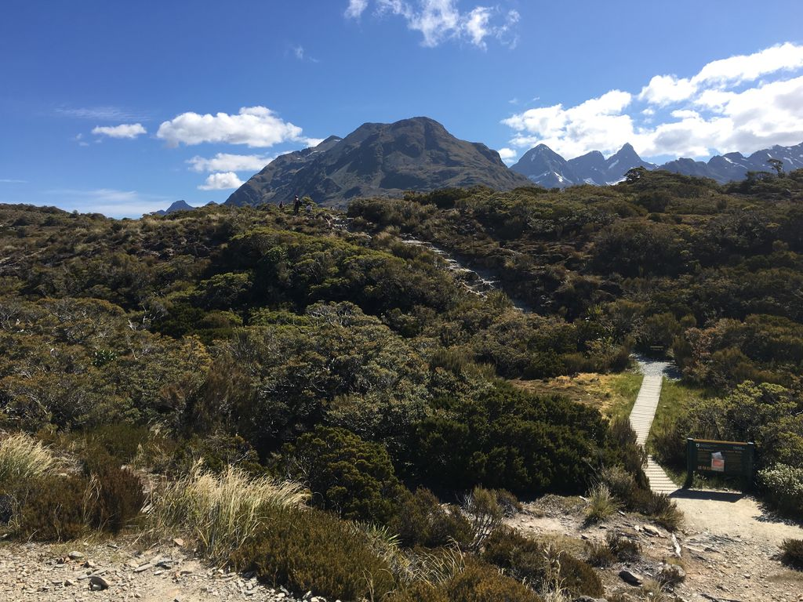
Photo: nigelramsay · Mapillary, CC BY-SA 4.0 Key Summit
A short climb lifts the track onto Key Summit, 919 metres, a rare watershed where three river systems part — the Hollyford to the Tasman Sea, the Greenstone and the Eglinton to the south. A boardwalk loops through alpine bog, tarns and bog-pine on the exposed top. The Darran Mountains stand close and sharp. Few viewpoints give so much for so little climb.
-
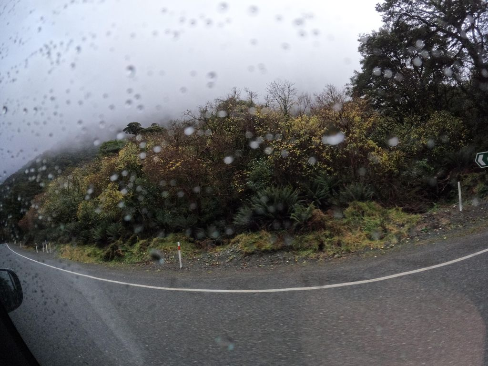
Photo: skillsy · Mapillary, CC BY-SA 4.0 The Divide
The track drops through silver beech to The Divide, at 531 metres the lowest east–west pass in the Southern Alps crossed by a road. The Milford road runs past the car park here, buses bound for the sound. Thirty-two kilometres of alpine crossing end at the forest edge, where the Milford Sound buses pull in. Most walkers stop for one last look up at the tops before stepping onto the tarmac.
Walking the Routeburn Track
Your watch is already counting these steps. Watch Walks spends them on the Routeburn Track, all 32 km of it, and hands you each landmark as you reach it. There's no route recording, no account and no ads. The Inca Trail is free; this one is a one-time purchase with no subscription.
Other trails in Oceania
- Te Araroa 3,000 km · New Zealand
- Bibbulmun Track 1,000 km · Australia
- Larapinta Trail 223 km · Australia (NT)
- Australian Alps Walking Track 655 km · Australia (VIC/NSW/ACT)
- Cape to Cape Track 123 km · Australia (WA)
- Overland Track 65 km · Australia (Tasmania)